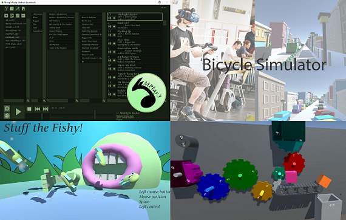

If on a summer's night a programmer...
by Tim J. Dierks
Hello, Sailor!
Projects
About Me
"...tries to think of a title for his new website."
Welcome to my beautiful website.
It is purposefully designed to make your viewing as pleasurable as possible and, more importantly, to show that I absolutely don't care about web-design/technologies.
The main purpose of this website, at least for now, is to show off some projects I worked on. Originally for application purposes, but now just because I like having them here.
Academic Projects
|
|

Hobby Projects
|